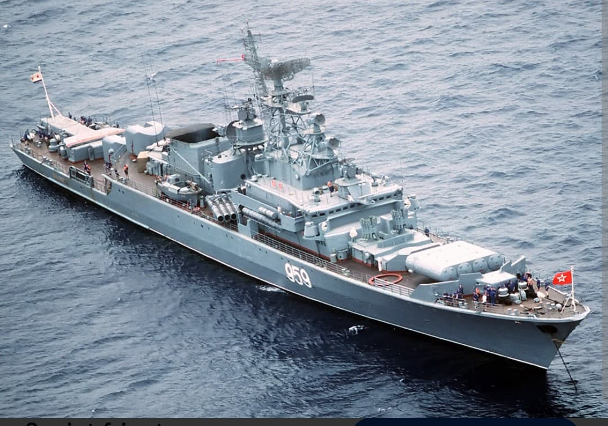
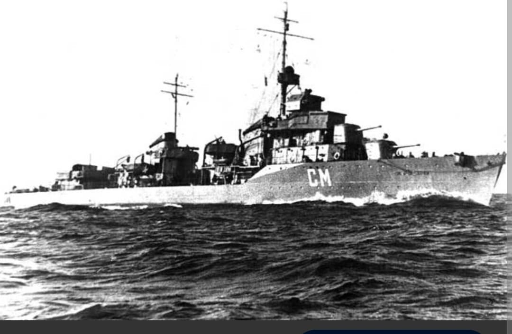
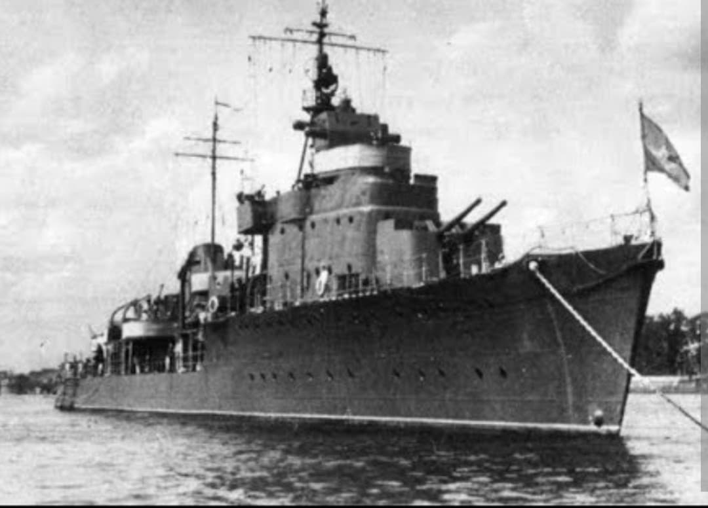

La révision compartimentée et renforcée des destroyers rapides soviétiques

Le Storozhevoy (« Le Vigilant ») appartient à la série de destroyers Projet 7U (pour Uluchshenny – « Amélioré »). Cette classe redessinée d'urgence en 1937 visait à corriger le principal défaut du Projet 7 : la vulnérabilité de sa machinerie trop concentrée.
Sur le Projet 7U, les chaudières et turbines ont été disposées en alternance dans des compartiments étanches séparés, facilement identifiables par l'adoption de deux cheminées au lieu d'une.

Touché par une torpille en juin 1941 qui lui arracha toute la proue, le *Storozhevoy* survécut grâce à son étanchéité renforcée. Il continua à servir de batterie d'artillerie à Léningrad avant de recevoir une nouvelle proue en 1942.

Construits à 18 exemplaires, les destroyers du Projet 7U prouvèrent l'efficacité de leur reconception face aux avaries majeures subies en combat naval.
Page du Musée HOP WW2 – Section Marine Soviétique